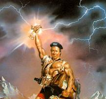

ГЕРОЙ
АХЕЛЛАИР

| Раса: |
Githyanki |
| Пол: |
Мужской
|
| Профессия: |
Некромансер |
| Align: |
Chaotic-Evil |
| Клан: |
Shalafi |
| Религия: |
??? |
Выбрав путь черной магии еще будучи помошником мага, Ахеллаир сумел сохранить
свою душу. Служению злу он предпочел служение магии. Поэтому любой, даже
начинающий маг может рассчитывать на его помощь независимо от его жизненной
позиции. Тем не менее, характер его импульсивен и непредсказуем - и кто-то
слишком доверчивый вполне может стать обьектом его не всегда добрых шуток.
В молодости он был одним из несущих Хаос, однако впоследствии, когда боги
разрушили старые кланы и предоставили возможность снова выбрать свой путь, он
пошел дорогой, которую ему показала мудрая Лилит. С тех пор он служит клану
Shalafi. Однако, в связи с преклонным возрастом (58 лет) он редко приходит в
этот мир. Имя бога, которому он поклоняется, неизвестно, но многие видели
черепообразную татуировку у него на плече.